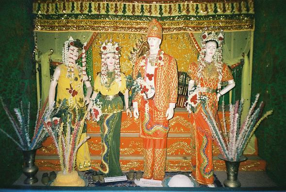
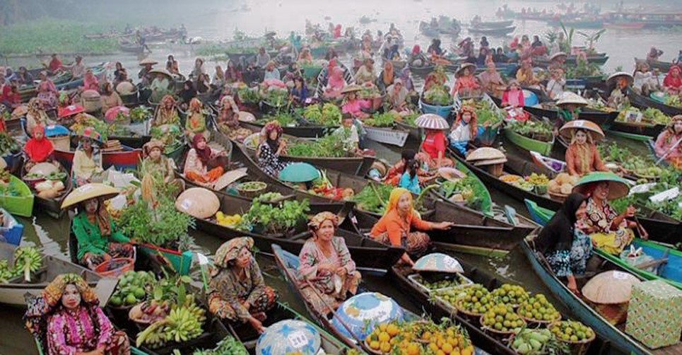
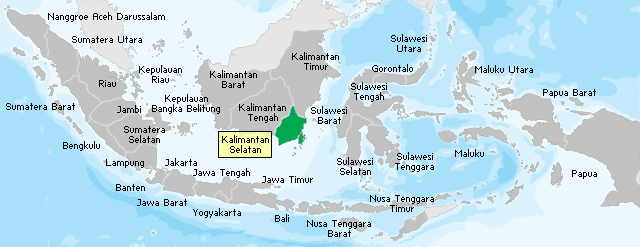

Sebagai salah satu suku terbesar di Indonesia, suku Banjar memiliki karakteristik kebudayaan. Pelembagaan budayanya merupakan produk dari pengadaptasian, pengakulturasian dari budaya dasar suku Banjar pribumi dengan kebudayaan Hindu, Budha serta Islam. Oleh sebab itu, dalam setiap bentuk adat istiadat yang ada dalam tradisi suku Banjar, akan selalu bisa dijumpai hasil dari perpaduan nilai-nilai budaya tersebut.
Johann Sebastian Bach

Ndaru Purnagati Prianggo
Wolfgang Amadeus Mozart
Pilihan tepat untuk rasa susu yang enak. ya cuma Susu Murni Nasional yang penuh akan serat dan gizi dengan rasa yang khas dan tidak bikin eneg, membuat Susu Murni Nasional disukai banyak orang,mulai dari anak-anak hingga orang dewasa
Phone :0822 2595 8746
FAx :0812 3456 1234
Email : Ndaru Purnagati@gmail.com